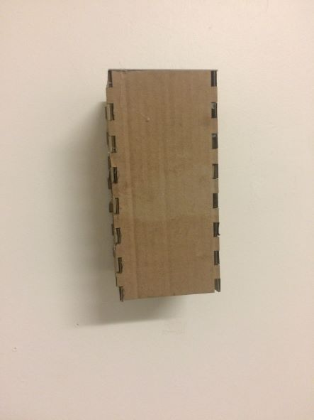

The three ideas I had for my final project were as follows
1. A battery-powered light that could be placed on a wall. I came up with this idea because I have a bunk bed
at home so I can't have a lamp. In terms of machines, my plan was to 3d print a shell for the lightbulb and parts and then laser cut wood to be a shell around that and be the part that
attaches to the wall. In terms of the electronics I was just going to buy them and then create a switch that hooks up to it.
2. a set of dice to play Dungeons and Dragons with and a box with specific slots to fit them in. The set of dice would include a 20 sided die, an 8 sided die, two 10 sided dice with one being a percentage die, a 6 sided die, a 4 sided die,and a 12 sided die.
I came up with project because I like playing DnD and I thought it would be a cool idea to create some that I designed myself. After doing some reasearch I figured out that I was going to resin print the dice because it would've created the most fair dice when rolling.
I was going to laser cut the box to be the shape of a seven-sided polygon with specific slots for the specfic dice so the d20 slot would've not fit the d6 slot.
3. a chess set, but the box folds out to be the board. Honestly don't know why I came up with this idea ( probably from all the 3d printed chess sets I saw on Pinterest)
I don't even play chess I just thought it was a cool idea. I was going to 3d print the chess pieces and lasercut the box with engravings for the squeres on the board.
After talking with Tuna during the consultation, I decided to go with the light as it was more intergrated then the other two. The consultation was very helpful as it
helped me decide what my final project would be. It also gave me a direction for what I should reasearch and things to buy for this project. I also now know that I'm going to build the 3d printed casing as my first prtotype part. I was originally kinda scared about going with the light because of the electronics part, but Tuna said he would help me
connect the switch to the rest of the electronics. So , I would say i'm in pretty good shape for Wenesday.
I changed my original idea for the protype the 3d printed part will now hold the lightbulb in place. I based my measurements for this part by looking at lightbulbs online
Next I am going to build a cardboard box for the outside using cardboard and figure out how to attach it to the wall
I built the design for the cardboard piece using makeabox.io to create a template that was the right measurements, then i deleted the two sqaure
pieces and made the top aand bottom of each piece flat because the don't need to fit into anything. I figured out how I'm going to attach the thing to the wall
I designed a brick piece to attach to the box and then created a piece for the brick to slide into that I can tape to the wall.

Next step is to get the lightbulb and measure it to make sure I get the measurements exactly right. Then im going to build the box out of wood, change the 3d printed part to fit the exact measurments.
final files
https://drive.google.com/file/d/1p9wjkSrcRyL7ootxEEg-2BgB_1OirJdu/view?usp=sharing
https://drive.google.com/file/d/1au6dJYYqAusJZmuLDkGrpXLf58BUE9Oi/view?usp=sharing
https://docs.google.com/spreadsheets/d/1yUHbHWYOx6CLA3L_FtwBlHSFxs0b49B18vHF6-OOBKU/edit?usp=sharing
The thing that I made to hang the light up on the wall did not work for the final piece because the wood and light bulb were to heavy
for it so wha i ended up doing is putting a command strip on the back of the brick piece after glue it to the back of the project it works really well. One thing that I shoulve kept was the inide
rectangle on the 3d printed lightbulb piece because it helped me plan out placing, so I wish I had kept that int the final design.
finalproduct pictures